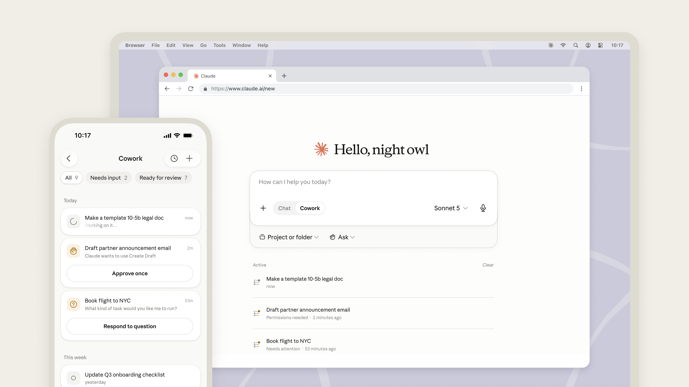

Claude Cowork가 모바일과 웹으로 확대 출시됩니다. 이제 어떤 기기에서든 당신의 세션과 파일이 당신을 따라 이동합니다. 베타 액세스는 앞으로 몇 주에 걸쳐 Max 사용자를 시작으로 순차적으로 열리며, 이후 더 많은 요금제로 확대될 예정입니다.

Cowork는 당신이 Claude에게 어떤 작업을 맡기면, Claude가 당신의 파일, 캘린더, 이메일, 메신저 앱, 웹, 그리고 당신이 연결한 다른 도구들을 넘나들며 그 일이 끝날 때까지 처리하는 공간입니다.
AI 에이전트는 코드를 작성하며 이름을 알렸습니다. 하지만 사람들이 Claude Cowork를 어떻게 쓰는지 살펴보니, 90% 이상은 소프트웨어 개발이 아니었습니다. 대부분은 일상적인 지식 노동(knowledge work)이었고, 가장 큰 범주는 비즈니스 운영(business operations)과 콘텐츠 제작(content creation)이었습니다. 분기 지출을 대사(reconcile)하고 차이 분석 메모(variance memo)를 작성하는 일, 계약서가 담긴 폴더 하나를 위험 요소가 표시된 갱신 추적표(renewals tracker)로 만드는 일, 통화 녹취록과 파이프라인 데이터로 내일 쓸 고객 발표 자료를 만드는 일 같은 것들이었죠. 이런 작업을 다 합치면 전체 사용량의 약 절반에 이릅니다. 바로 일을 둘러싼 일입니다. 누구의 직무 기술서에도 좀처럼 적혀 있지 않지만, 모두의 한 주에서 큰 비중을 차지하는 일 말입니다.
누구나 AI에게 답을 묻습니다. 하지만 일을 통째로 넘기는 것은 다른 차원의 일이며, 사람들은 계속해서 Claude에게 더 큰 일을 맡기고 있습니다. 그런 일은 한자리에 앉아서 끝나지 않습니다. 밤사이에, 회의와 회의 사이에, 기차 안에서 쌓여 갑니다. 오늘 전까지 Cowork는 당신의 노트북 안에만 있었기에, 당신이 자리를 뜨면 일도 멈췄습니다. 이제는 그렇지 않습니다. 세 가지가 달라집니다:
일이 당신을 따라옵니다. 책상에서 작업을 시작하고, 휴대폰으로 진행 상황을 확인하며, 완성된 결과물을 어디서든 이어받으세요.
일이 백그라운드에서 계속됩니다. 노트북을 닫고 회의에 들어가도 Claude는 계속 일합니다. 이제 예약 작업(scheduled tasks)은 켜져 있는 기기가 하나도 없어도 실행됩니다. 월요일 아침 6시에 고객 준비 작업을 걸어 두세요. Claude가 이메일 스레드, 녹취록, 최근 뉴스를 훑어 브리핑 문서를 만들고, 후속 이메일까지 초안으로 작성해 두되 발송은 하지 않은 채 남겨 둡니다. 커피 한 잔과 함께 검토하면 됩니다.
결정은 여전히 당신에게 옵니다. Claude가 오직 당신만이 내릴 수 있는 판단에 다다르면, 질문을 던지고 그 질문이 당신의 휴대폰으로 전달됩니다. 회의 중간에도 초안의 방향을 다시 잡아 줄 수 있고, 그러면 Claude는 올바른 경로로 계속 일합니다. 당신이 검토하고 승인하기 전까지는 아무것도 내보내지 않습니다.
"저는 출장 중에 제 고객들을 추적하는 대시보드를 만들었어요. 노트북에서 시작했다가, 짐이 나오길 기다리는 동안 휴대폰으로 그 세션을 이어받았죠."
— Armmand Hosseini, Customer Success, Ramp
데스크톱은 여전히 깊이 있는 작업(deep work)을 위한 공간이며, Claude가 당신의 로컬 파일과 브라우저까지 활용할 수 있는 완전한 Cowork 경험을 제공합니다. 그동안 데스크톱 앱을 설치할 수 없었던 사용자들도 이제 Cowork를 사용할 수 있습니다.
또 하나 눈에 띌 변화가 두 가지 있습니다. 웹과 데스크톱에서 이제 채팅(chat)과 Cowork가 하나의 홈을 공유하며, 당신의 프로젝트와 아티팩트(artifacts)가 두 공간에 걸쳐 함께 놓입니다. 일을 위임하는 것이 이제 그냥 부탁하는 것만큼 쉬워졌습니다.
웹에서는 claude.ai의 홈 화면에서 Cowork 세션을 시작하세요. 모바일에서는 iOS 및 Android용 Claude 앱의 사이드바에서 Cowork를 여세요. 완전한 경험을 원한다면 Claude 데스크톱 앱을 내려받으세요. 각 환경(surface)에서 어떤 기능을 쓸 수 있는지는 헬프 센터(Help Center)에서 확인할 수 있습니다.
이미 당신 앞에 놓인 일부터 시작해 보세요. Claude에게 그 폴더, 그 스레드, 반쯤 만들다 만 발표 자료를 가리켜 주고, 완성된 모습이 어떤 것인지 설명하면 됩니다. 출시를 기념해, 우리는 두 배로 늘린 Cowork 사용 한도를 8월 5일까지 연장합니다. 더 큰 작업을 시도해 볼 여유가 충분하도록 말이죠.